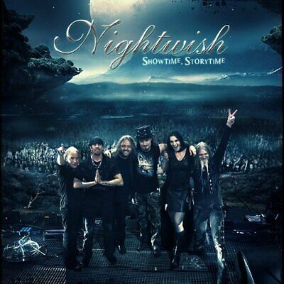
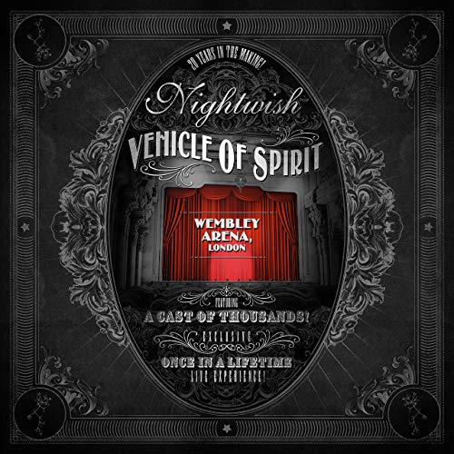
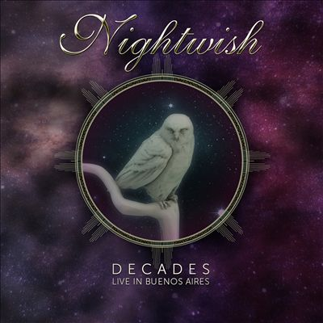

The discography of the Finnish symphonic metal band Nightwish consists of nine studio albums, one extended play, six live albums, seven compilations, eighteen music videos and twenty-two singles. The band was formed in 1996 by songwriter and keyboardist Tuomas Holopainen, guitarist Emppu Vuorinen, and former vocalist Tarja Turunen; Nightwish's current line-up has six members although Turunen has been replaced by Anette Olzon and later by Floor Jansen, and the original bassist, Sami Vänskä, has been replaced by Marko Hietala, who also took over the male vocalist part.
Showtime, Storytime is a video release, released as a double Blu-ray, DVD, CD and LP from Finnish symphonic metal band Nightwish. Nuclear Blast recorded their live performance at Wacken Open Air in Wacken, Germany on 3 August 2013. Showtime, Storytime is the first Nightwish production to feature Floor Jansen on vocals. She initially replaced previous vocalist Anette Olzon during their North America tour leg, and on 9 October 2013 it was revealed that she would become an official band member, along with Troy Donockley. The running time of the concert is 1 hour and 38 minutes. The album also contains a 120-minute documentary about the first days of Jansen in the band, still as an only live member, and her process of adaptation in the band, called "Please Learn the Setlist in 48 Hours
Vehicle of Spirit is a video and audio release from Finnish symphonic metal band Nightwish. Two shows have been recorded during Endless Forms Most Beautiful World Tour; one at Tampere Stadium (July 31, 2015) and the other at Wembley Arena (December 19, 2015).[citation needed] Also, various songs were recorded around the world. It was released on December 16, 2016, in Europe and January 7, 2017, in North America
Decades: Live in Buenos Aires is a video and audio release from the Finnish symphonic metal band Nightwish, which was recorded during the Latin American leg of the Decades: World Tour. It was released on December 6, 2019
